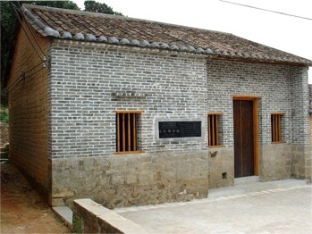
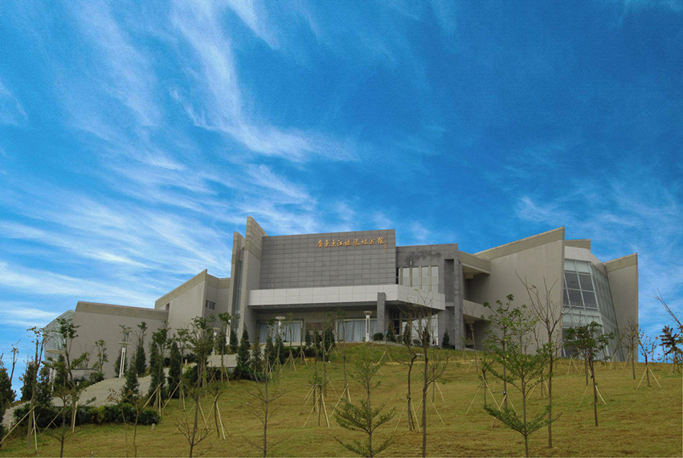

东纵文化
东江纵队（简称“东纵”）是抗日战争时期中国共产党在广东省东江地区创建和领导的一支人民抗日军队，是开辟华南敌后战场，坚持华南抗战的主力部队之一，其根据地就在东莞市大岭山。东江纵队在远离党中央、远离八路军和新四军主力的情况下，处于孤悬敌后的艰苦环境中，遵照中共中央的正确指示，紧密依靠群众，坚持独立自主的游击战争方针，转战东江两岸，深入港九敌后，开辟粤北山区，挺进韩江平原，积极配合华南抗日战场和盟军对日作战，成为华南敌后抗战的中流砥柱，威震南粤，蜚声海外，被中国中央军委誉为“广大人民解放的旗帜”，谱写了中国人民抗日战争的壮丽篇章。
大岭山抗日根据地是华南地区保存最为完好、规模较大、历史风貌最为完整的抗日旧址，也是东纵精神发源地之一，现有三大队大队部、会议室、大家团结报社、交通站、粮食加工场、操场、医务所、中山书院，以及大岭山抗日民主政权连平联乡办事处9处文物旧址。在此战斗的革命先烈留下了无数可歌可泣的英雄事迹，其中“葵衣队”围剿日本兵、百花洞大捷、大王岭保卫战、粉粹日军“万人大扫荡”等战斗一直被后人传颂，东纵儿女用鲜血和生命留给后人团结一心、自强不息、艰苦奋斗、不甘人后的抗战精神。
东莞东纵纪念馆位于大岭山大王岭村，包括大岭山抗日根据地旧址和东江纵队主题展览两部分，主要特色是按照抗战时期各旧址的历史原貌，采用当地的革命和民俗文物进行场景复原陈列，该陈列以绘画、雕塑类展品为主。

广东人民抗日游击队第三大队大队部旧址

广东东江纵队纪念馆